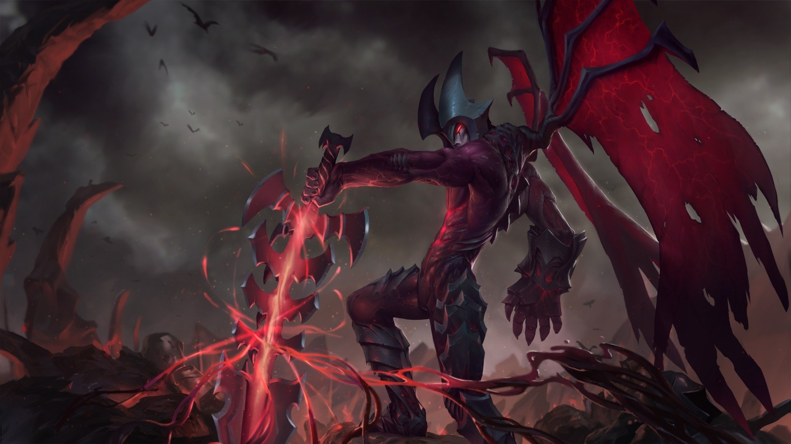
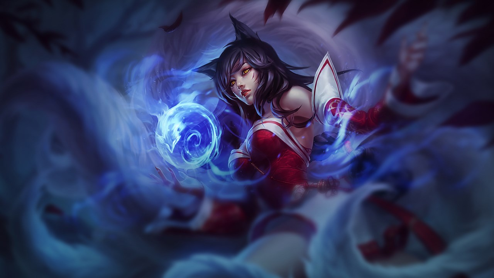
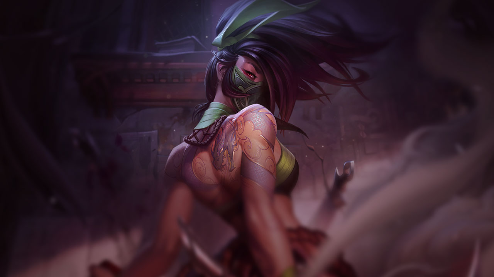
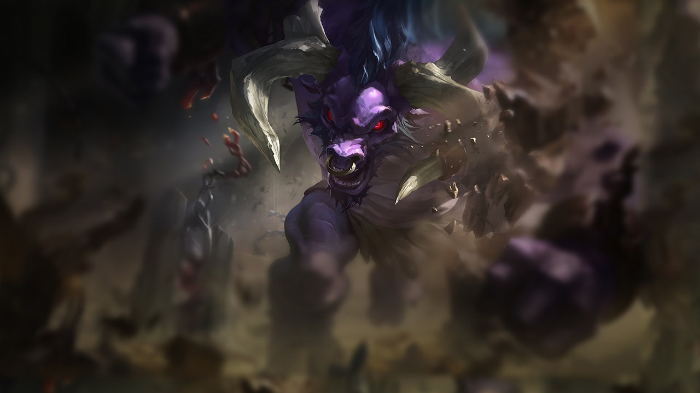
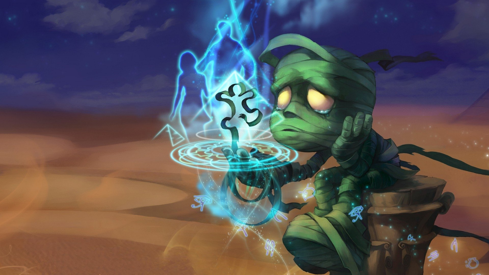
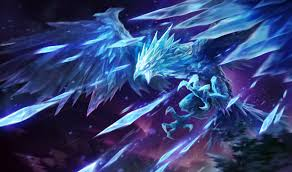
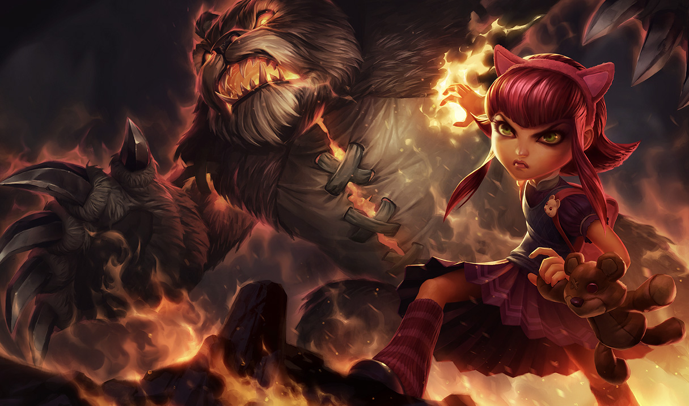
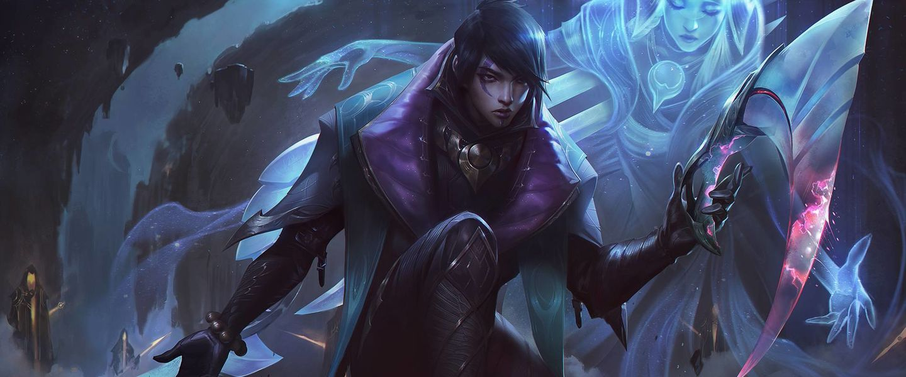

ATROX
LA ESPADA DARKIN
Alguna vez honorables defensores de Shurima contra Vacío,
Aatrox y sus hermanos se convertirían con el tiempo en una mayor
amenaza para Runaterra, y fueron derrotados solo con brujería astuta y mortal.
Pero después de siglos de encarcelamiento, Aatrox fue el primero en encontrar
la libertad de nueva cuenta, corrompiendo y transformando a aquellos lo suficientemente
tontos como para intentar blandir el arma mágica que contenía su esencia.
Ahora, con carne robada, él camina por Runaterra en una brutal aproximación
a su forma pasada, buscando una venganza apocalíptica y muy retrasada.
Last updated 3 mins ago

AHRI
LA VASTAYA DE NUEVE COLAS
Ahri, conectada de forma innata con el poder latente de Runaterra,
es una vastayana que puede modelar la magia en orbes de energía pura.
Se divierte manipulando las emociones de su presa antes de devorar su esencia vital.
A pesar de su naturaleza depredadora, Ahri conserva una sensación de empatía,
ya que recibe destellos de los recuerdos de cada alma que consume.
Last updated 3 mins ago

AKALI
LA ASESINA FURTIVA
Tras renunciar a la Orden Kinkou y a su título como el Puño de la Sombra,
Akali pelea sola, lista para ser el arma letal que su pueblo necesita.
Aunque conserva todo lo que aprendió de su maestro Shen,
juró defender a Jonia de sus enemigos, una muerte a la vez. Puede que Akali
ataque en silencio, pero su mensaje resonará con fuerza y claridad: teman
a la asesina sin maestro.
Last updated 3 mins ago

ALISTAR
EL MINOTAURO
Alistar, que desde siempre fue un gran guerrero con una temible reputación,
busca venganza por la muerte de su clan a manos del imperio noxiano.
Aunque haya sido esclavizado y forzado a tener una vida de gladiador,
su Unbreakable Will voluntad inquebrantable fue lo que impidió que se
convirtiera en una bestia completamente. Ahora, libre de las cadenas
de sus anteriores amos, pelea en nombre de los desamparados y desprotegidos
usando tanto su furia como sus cuernos, pezuñas y puños como armas.
Last updated 3 mins ago

AMUMU
LA MOMIA TRISTE
Cuenta la leyenda que Amumu es un alma solitaria y melancólica de la antigua
Shurima que vaga por el mundo en busca de un amigo. Una antigua maldición
lo condenó a permanecer solo por toda la eternidad. Sus Cursed Touch caricias son la muerte,
su afecto es la ruina. Quienes afirman haberlo visto lo describen como un cadáver
viviente de corta estatura envuelto en vendajes. Amumu ha sido la inspiración de mitos,
canciones y folclore que se han contado una y otra vez a lo largo de generaciones,
tanto que es imposible separar la verdad de la ficción.
Last updated 3 mins ago

Anivia
LA CRIOFÉNIX
Anivia es un espíritu benevolente alado que soporta interminables ciclos de vida,
muerte y resurrección para proteger Fréljord. Nació de la unión del hielo cruel y del viento
penetrante, por lo que es una semidiosa que utiliza esos poderes elementales
para frustrar a quien se atreva a perturbar su tierra natal. Anivia guía y protege a las tribus
del norte hostil, quienes la veneran como símbolo de esperanza y como presagio de un gran cambio.
Pelea con cada fibra de su ser sabiendo que su recuerdo perdurará a través de su
sacrificio y que renacerá en un nuevo mañana.
Last updated 3 mins ago

ANNIE
LA HIJA DE LA OSCURIDAD
Peligrosa y encantadora, Annie es una niña con un gran poder piromántico.
Incluso en las sombras de las montañas al norte de Noxus, es una maga excepcional.
Su afinidad innata con el fuego se manifestó de forma precoz a través de explosiones emocionales
impredecibles, aunque aprendió con el tiempo a controlar esos “trucos inocentes”.
Uno de sus favoritos es invocar a su amado osito de peluche Invocar- Tibbers Tibbers como su feroz
protector. Annie vaga por los bosques oscuros siempre en busca de alguien con quien jugar,
perdida en la perpetua inocencia de la niñez.
Last updated 3 mins ago

APHELIOS
EL ARMA DE LOS ADEPTOS
Aphelios emerge de la sombra de la luz de la luna con las armas desenvainadas y
mata a los enemigos de su fe en un silencio melancólico. Habla únicamente a través de la certeza de su
puntería y del disparo de cada arma. Si bien su impulso proviene de un veneno que lo enmudece,
es guiado por su hermana Alune, quien, desde un santuario lejano, le envía a sus manos un arsenal de armas
de piedra lunar. Mientras la luna resplandezca en lo alto, Aphelios nunca estará solo.
Last updated 3 mins ago

ASHE
LA ARQUERA DE HIELO
Como Hija del Hielo y madre de guerra de la tribu Avarosan profileicon Avarosa,
Ashe comanda la más grande horda en el norte. Estoica, inteligente e idealista, pero incómoda con su
rol de líder, ella aprovecha las magias ancestrales de su linaje para portar un arco de Hielo Puro.
Apoyada por la creencia de su gente que ella es el héroe mitológico reencarnado de Avarosa,
Ashe espera unificar el Fréljord una vez más al retomar sus tierras antiguas y tribales.